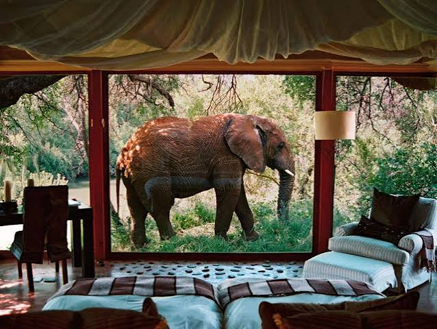
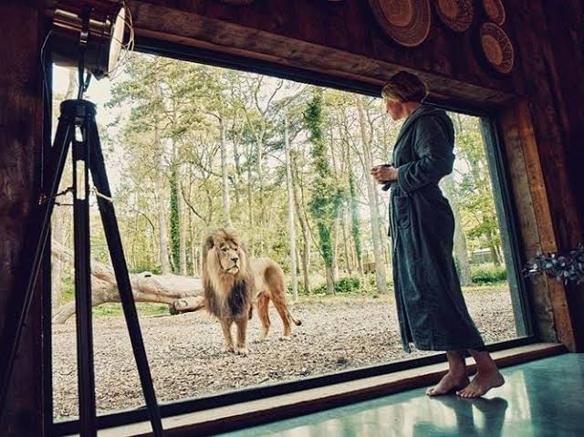
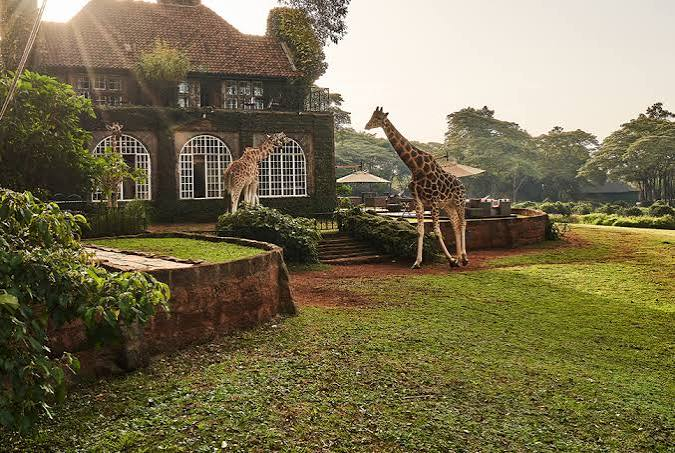

Guided Safari Tours
Explore the park with knowledgeable guides who help you discover its wildlife and landscapes.
Discover Kenya's wild beauty, one adventure at a time.
Explore the breathtaking landscapes and diverse wildlife of Tsavo National Park. Our safari experiences are designed for nature lovers, families and adventure seekers.

Explore the park with knowledgeable guides who help you discover its wildlife and landscapes.
Enjoy opportunities to photograph Kenya's remarkable animals and scenery.
Plan a memorable stay with safari and accommodation options to suit your trip.

